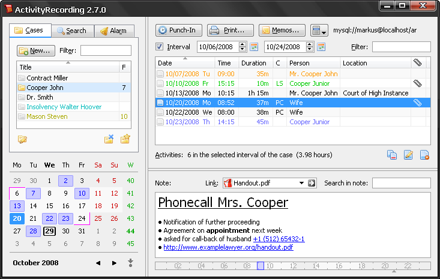
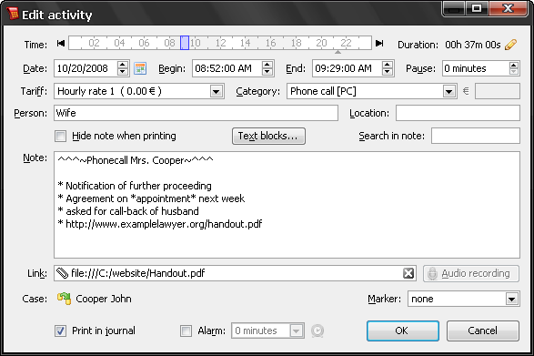
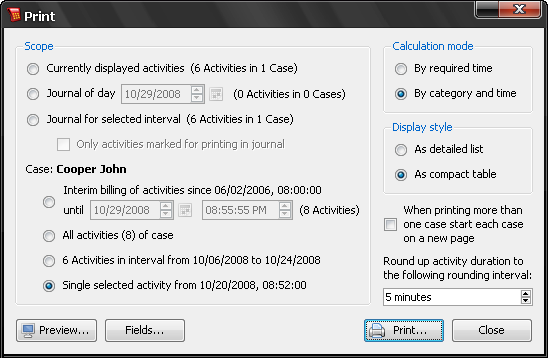

Software for Activity Recording/Time Recording
© 2005–2025 Dipl.-Ing. Dr.techn. Markus Gritsch
© 2005–2025 Dipl.-Ing. Dr.techn. Markus Gritsch
   deutsch :: english deutsch :: english    |
|
|
This software allows recording, searching, and billing of activities in an easy and comfortable way. Because of the clear design, all steps can be performed fluently and efficiently. It can be used by all achievement-oriented professions (solicitors, accountants, architects, consultants). The software can be used without any limitations for 50 days. After this evaluation period has passed, it is necessary to acquire a registration key for every computer the software is installed on. The price of the registration key is 290 Euro for commercial use. No recurring license fees will be charged. Updating an already registered program to a newer version is free. Suggestions on how to improve the program, or requests for modifications to individual needs are taken into account and implemented as far as possible. |
|
| Download |
| Features |
| *Please note the legal regulations applicable in your country. |
| Screenshots |
   |
|
Impressum: Dr. Markus Gritsch, Buntweg 7a, A-6511 Zams, Österreich. Telefon: +43(0)5442/90958, E-Mail: siehe oben |
|